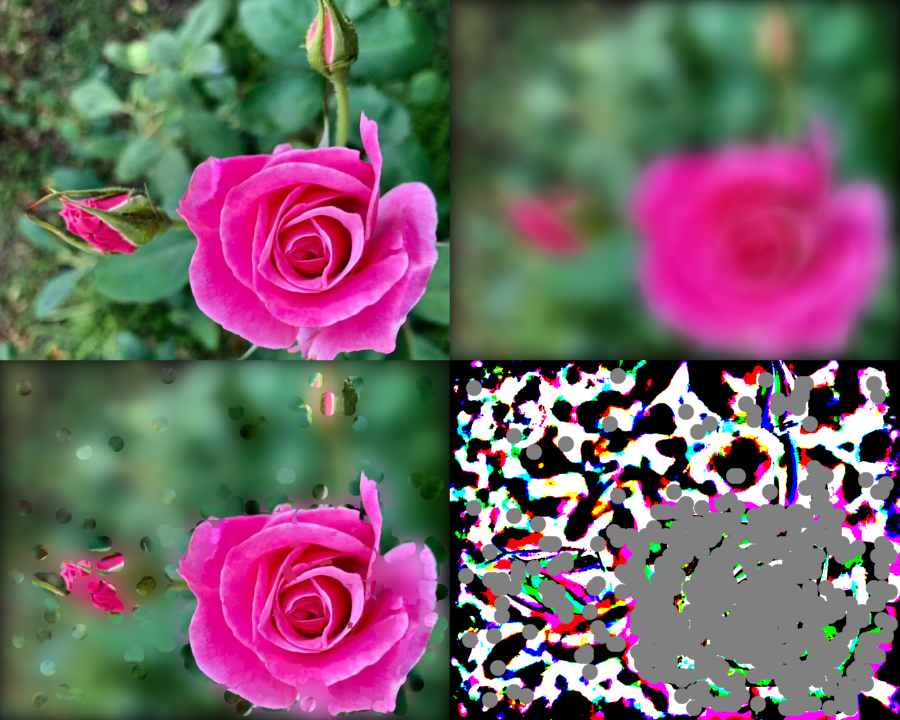

F2QBokeh function operates in frequency domain and requires for avisynth+ FFTw3f-3 32 bit dll or for 64 bit avisynth+ FFTw3f-3 64 bit dll, to be in the path. One can also use Bokeh function of this plugin, which operates in spatial domain only for a similar application.
Photographs or videos of birds, animals, flowers etc; taken with high end cameras usually keep lesser depth of field so that the object is well in focus and background blurred beyond recognition. On the other hand most such videos taken by us do not look so good as background is insufficiently blurred.
F2QBokeh function requires input image(clip) that is required to get Bokeh effect, and a clip containing heavily blurred version of first clip.It detects parts of image in focus and out of focus. The in focus parts are inserted into the blurred clip. Parameters grid and thresh distinguish between focus and out of focus and need critical adjustments.
for the image I used, the values of grid and thresh which were near acceptable were 8: 0.15, 16: 0.45, 24: 0.6, 32: 0.75, 48: 0.8, 64: 0.85. Better to experiment using either script clip or animate or applyrange functions of avisynth+. As with other functions using grid, the border areas are left unprocessed. Suggest crop later.
Only RGB, Y and YUV444 ( no subsampling) formats are processed. Preferably input be field seperated. RGB formats give better results than YUV
| Description | Name | Type | Limits | Default |
| Input clip | clip | RGB, YUV444, Y | none | |
| Heavily blurred clip | clip | identical format of input clip | none | |
| grid X grid size to be used for detection | grid | integer | 3 to 64 | 16 |
| Threshold for distinguishing focus and out of focus | thresh | float | -1.0 to 1.0 | 0.45 |
avisource or imagereader etc;
imagereader("c:\images\Rose.jpg",end = 100)
converttoRGB24()
# function does not check
assumefieldbased()
F2qb= F2QBlur(psf = "focus",x = 38)
#mb = MBlur(a, x = 24, y = 6, blur = "focus", uv = true)
#F2QBokeh( last, mb,grid = 16, thresh = 0. 45)
f2b = F2QBokeh(last, f2qb,grid = 16, thresh = 0.4505)
fs=subtract(f2b, f2qb).Levels(127,1,129,0,255)
s=subtract(f2b, last).Levels(127,1,129,0,255)
stackHorizontal(s,fs)
b =stackHorizontal(f2b,s)
a=stackHorizontal(last,f2qb)
stackVertical(a,b)
convertbits(8)
reduceby2()

| To my index page | down load plugin | To Avisynth |